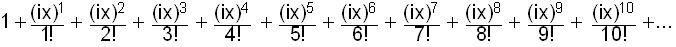
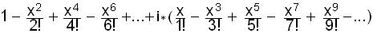
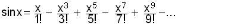

Infinite series for eix , Cos x and Sin x
From the binomial expansion of (1+x/n)n and finding the limit of the infinite series, as n->infinity, we get
the infinite series for
ex
=
Substitute ix->x
to get the Infinite series for
eix = 
Remember the powers of i: i0 = 1, i1 = i, i2 = -1, i3 = -i, i4 = 1, ... and look for patterns!
eix
= 
Factor out the i, and separate the real terms from the imaginary terms,
eix = 
So
eix =
The infinite series for cos x is

The infinite series for sin x is
Substituting cos x and sin x in eix above, we get
eix = cos x + i*sin x
where x is an angle in radians
From this we can get eiPi = cos Pi + i* sin Pi = -1 + 0 = -1 and
ei*Pi + 1 = 0
again the 5 most important numbers in mathematics in 1 statement!
See chapter 11